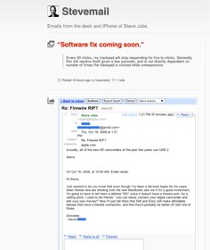
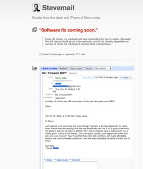

[KlimBim] 2x neue iPhone-Ads, iPad-Alice, 4.0-Beta, Lonely Planet-Reiseführer, Kodak-Gegenklage und From: Steve Jobs
von alex olma | 20 April 2010 | 13:04 Uhr
Apple veröffentlicht zwei neue iPhone-Trailer in Ihrer TV-Galerie.
via apple.com
~~~~
Wunderschöner Werbetrailer für die digitale iPad-Bücherausgabe von “Alice im Wunderland” (6.99 €; App Store-Link).
~~~~
Ein paar kurze iPhone OS 4.0-Neuerungen der letzten Tage.


- Die Sternchenvergabe für Bewertungen von App Store-Programmen bei dessen Entfernen (”Rate on Delete“) scheint in der aktuellen Beta nicht mehr vorhanden.
- Ebenfalls ausradiert wurde der Google-Schriftzug für die Suche in MobileSafari. Obwohl “Google” derzeit weiterhin als Standardsuchmaschine eingetragen ist, lautet die Button-Bezeichnung jetzt simple “Search”.
- Ein Engadget-Leser möchte eine Facebook-Anbindung für die iPhone-Kontaktesynchronisation zum sozialen Netzwerk aufgespürt haben.
~~~~
13 digitale Lonely Planet-Reiseführer (App Store-Link) werden derzeit kostenlos angeboten. Das Angebot gilt bis zum 22. April und umfasst die europäischen Städte Amsterdam, Barcelona, Berlin, Budapest, Kopenhagen, Istanbul, London, Moskau, München, Paris, Rome, Stockholm und Wien.
~~~~
Auf die Anklageschrift vom Kamerahersteller Kodak gegen Apple und RIM aus dem Januar 2010 – betreffend zwei Patentverletzungen – wehrt sich Cupertino jetzt mit einer Gegenklage.
~~~~
 

Die angeblich von Steve Jobs höchstpersönlich beantworteten E-Mail-Anfragen gegenüber Endkunden werden in diesen zwei Tumblr-Blog für die Ewigkeit archiviert – von “Are your nuts?” bis zum markanten “No.”!
Werbung
-
choise
-
Dedj
-
iphoneblog
-
dedj